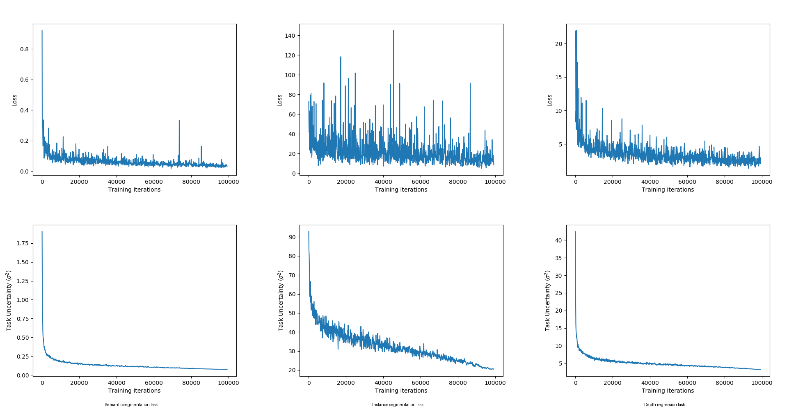

Let each task's noise set its own weight.
On this page
Multi-Task Learning Using Uncertainty to Weigh Losses for Scene Geometry and Semantics.
CVPR 2018 · arXiv:1705.07115
The authors were working on scene understanding for robotics, where slow computation is not an option. A scene-understanding system has to see geometry and semantics at the same time: per-pixel depth (a regression task), plus semantic and instance segmentation (classification tasks). Different units, different scales, one shared representation.
Their practical case for combining them: one model cuts the computation, and cues from one task, like depth, can regularize and improve another, like segmentation. Their network takes a single monocular image and produces all three outputs jointly.
But there was a wall: performance depends strongly on the relative weighting between the tasks' losses, and tuning those weights by hand is, in their words, a difficult and expensive process, making multi-task learning prohibitive in practice. Their contribution is a principled alternative: derive the weights from each task's homoscedastic uncertainty, a per-task noise level learned during training, so the model learns how much to trust each loss instead of you guessing.
The methods in this series so far step in after the losses exist. They take the gradients as given and repair them: rescale them, cut the parts that fight, or blend them into a compromise. This idea is older and quieter, and it works one level earlier. Instead of asking how to fix conflicting gradients, it asks how loud each loss should be in the first place. And it answers with a principle from probabilistic modeling: a loss that is inherently noisier should count less.
Think of each task's output as a measurement. Some measurements are crisp: given the same image, the right answer barely changes. Is this a cat or a dog. Some are inherently fuzzy: predicting the exact depth of every pixel has a floor of guesswork no model can beat, because the information simply is not in the image. Kendall, Gal, and Cipolla call this irreducible fuzziness task uncertainty, written σi. A task with high σi is one where even a perfect model would still spread probability over several answers.
Here is the key move. If a task is that noisy, pushing hard on its loss is partly pushing on noise: the model chases fluctuations it cannot remove. The sensible thing is to turn the volume down on exactly those tasks, by an amount tied to how noisy they are. Each task gets a weight of 1/(2σi2) for regression, and 1/σi2 for classification, where the likelihood gives no 1/2. Either way, a task twice as noisy counts four times less. And the σi are learned as parameters during training, not set by hand.
Two likelihoods, two objectives. Regression uses the Gaussian form; classification uses the scaled-softmax form, which has no 1/2. Keep the two forms separate: the 1/2 belongs only to regression.
Three tasks, equal losses Li = 1.0, noise levels σ = (0.7, 1.5, 2.4), regression form. One computation per line:
Task 3 is about 3.4 times noisier than task 1, and its weight is about 12 times smaller. That is the square doing its job. Notice the third bill: the tiny weight is partly paid back by the large log price. The model still quieted the task, because the noise was real.
Same noise, classification form: task 1's weight would be 1 / 0.49 ≈ 2.0408, exactly double. No 1/2 anywhere in that form.
L = Σi ( Li / 2σi2 + log σi ) regression
# log_sigma = learnable vector, one entry per task, init 0
# (regression form shown; classification uses w_i = 1 / sigma2, no 1/2)
for i in range(K):
sigma2 = exp(2 * log_sigma[i]) # sigma_i^2, always positive
w_i = 1 / (2 * sigma2) # the volume knob
total += w_i * losses[i] + log_sigma[i] # loss + the honesty price
backward(total) # one pass updates network AND log_sigma
step(optimizer) # network and sigmas learn togetherThe loop is deliberately boring: no second optimizer, no gradient editing, no extra backward pass. Paste the loss, add one vector of parameters, done. It is the cheapest method in this series to adopt.
Uncertainty weighting is a scale method, and a principled one. Where GradNorm learns weights to equalize training speed, uncertainty weighting sets weights from the data's inherent noise, before training dynamics enter the picture. On multi-task vision benchmarks it matched or beat hand-tuned and grid-searched weights.
But it does nothing about direction. Two tasks can be perfectly weighted by noise and still have gradients that point against each other; the method never looks at the gradients at all, only at the loss values and the σi. It is a thermostat for volume, with no shadow-cutting and no leash. Two practical notes: the σi are usually learned as log σi (an unconstrained number, easier for the optimizer) and exponentiated inside the loss; and because the method only sees losses, it composes cleanly with the gradient-level methods. Weight the losses by learned uncertainty, then run PCGrad or CAGrad on the resulting gradients, letting the σi handle scale while the surgery handles direction.
| Method | The question it answers |
|---|---|
| GradNorm | How loud should each task be, to keep progress balanced? (learned, driven by training dynamics) |
| Uncertainty | How loud should each task be, given how noisy it inherently is? (learned, driven by the data) |
| PCGrad | How should the directions be edited so tasks stop fighting? |
| CAGrad | How do we protect the worst-off task and stay near the average, with a guarantee? |
Uncertainty weighting and GradNorm are the two volume knobs, one set by noise, one by pace. PCGrad and CAGrad are the steering. A real system can use one from each pair, and many do.
The paper's own evidence for the pricing idea. Figure 7 tracks all three tasks of the CityScapes model through training: the losses on top, the learned task uncertainties (σ2) below. The uncertainties converge in about a hundred iterations, while the network trains for tens of thousands. Tap a numbered marker to tour the six panels.

Tap a numbered marker on the figure to tour it.
Six methods, two families: reweight the losses, or reshape the update vector. Which ones actually behave differently when the arrows start fighting? That is the playground's question.